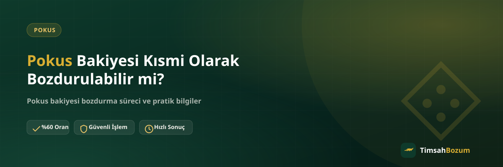

Hesabında Pokus bakiyesi olan çoğu kullanıcı, bozdurma işleminde bakiyenin tamamını vermek zorunda mı kalacağını merak ediyor. Cevap kısa: hayır, Pokus bakiye tabanlı bir hizmet olduğu için elindeki tutarın istediğin bir kısmını bozdurup kalanını hesabında bırakabilirsin. Bu esnekliğin nasıl işlediğine ve nelere dikkat etmen gerektiğine bakalım.
Pokus Bakiyesinde Kısmi Bozdurma Nasıl Çalışır?
Pokus bakiyeni bozdururken tek bir seçenek yok; elindeki tutarın tamamını değerlendirebileceğin gibi, sadece belirlediğin bir bölümünü de nakde çevirebilirsin. Örneğin hesabında 800 birim bakiye varsa, bunun bir kısmını bozdurup kalanını oyun içinde kullanmak için hesabında tutabilirsin. İşlem sırasında hangi tutarı bozdurmak istediğini belirtmen yeterli, kalan bakiye hesabında olduğu gibi durur.
Kısmi Bozdurma Güvenilir mi?
Kısmi işlem, tam bozdurmadaki adımların tamamen aynısını izler; ayrı bir onay süreci veya ek belge gerekmez. Güncel bakiyeni gösteren bir ekran görüntüsünü WhatsApp hattımızdan paylaşır, bozdurmak istediğin tutarı ve geçerli oranı teyit eder, onay sonrası ödemeni WhatsApp üzerinden görüşülen yöntemle alırsın. Üyelik, form veya hesabına erişim istenmez.
Ne Kadarını Bozdurmak İstediğimi Nasıl Belirtirim?
İlk mesajında net bir tutar belirtmen süreci hızlandırır. "Pokus hesabımda 600 birim bakiyem var, bunun 300'ünü bozdurmak istiyorum" gibi bir cümle ve bakiyeni gösteren ekran görüntüsü, oranın hemen teyit edilip işlemin ilerlemesi için yeterli. Sadece "bakiyemi bozdurun" yazıp tutar belirtmezsen, bu bilgi ayrıca sorulur ve işlem bir tur gecikir.
Kısmi Bozdurma Hesap Durumunu Etkiler mi?
Bakiyenin bir kısmını bozdurmak, hesabının veya kalan bakiyenin durumunu herhangi bir şekilde değiştirmez. Kısmi işlem sonrası hesabında kalan tutar, işlem öncesindeki gibi kullanılabilir durumda kalır; ayrıca hesabına erişim istenmediği için bu süreç boyunca hesap üzerinde işlem yapan tek kişi sensin. Bozdurduğun kısım için gösterdiğin ekran görüntüsü sadece bakiyeyi doğrulamak amacıyla kullanılır, başka bir işleme veya kayda dönüşmez.
Kısmi Bozdurma Neden Kod Tabanlı Hizmetlerde Yok?
Razer Gold ve iTunes gibi hizmetlerde durum farklı işler: bu hizmetlerde hesap bakiyesi değil, tek kullanımlık bir kod veya PIN bozduruluyor. Kod bölünebilir bir yapıda olmadığı için tam değeri üzerinden tek seferde değerlendirilir. Pokus, Paycell ve mobil ödeme gibi bakiye tabanlı hizmetlerde ise durum tam tersi; tutar dilediğin gibi bölünebilir, bu yüzden kısmi bozdurma sadece bakiye tabanlı hizmetlere özgü bir seçenek.
Kalan Bakiyemi Sonra Tekrar Bozdurabilir miyim?
Evet. Kısmi bozdurma sonrası hesabında kalan tutar, dilediğin zaman kullanmaya veya ileride ayrı bir işlemle bozdurmaya devam edebileceğin şekilde hesabında durur. Kalan kısmı bozdurmak istediğinde, güncel bakiyeni gösteren yeni bir ekran görüntüsüyle aynı WhatsApp hattından yeni bir işlem başlatman yeterli; önceki işlemin herhangi bir kaydını ayrıca sunman gerekmez.
Kısmi Bozdurmada Nelere Dikkat Etmeli?
Bozdurmak istediğin tutarın hesabındaki güncel bakiyeyi aşmadığından emin ol; ekran görüntüsündeki rakamla talep ettiğin tutarın tutarlı olması işlemi ilk mesajdan itibaren hızlandırır. Oranın işlem anında güncel olup olmadığını her kısmi işlem öncesinde ayrıca teyit etmek de önemli, çünkü önceki işlemde teyit ettiğin oran güncel işlem için geçerli olmayabilir. Birden fazla kısmi işlem planlıyorsan bunu baştan belirtmen de sürecin daha düzenli ilerlemesini sağlar.
Aynı Gün İçinde Birden Fazla Kısmi İşlem Yapılabilir mi?
Bakiyenin bir kısmını bugün, kalan kısmını ileride bozdurmak istersen bu iki ayrı işlem olarak yürür; aralarında belirli bir süre beklemen gerekmez. Her işlemde güncel bakiyeni gösteren bir ekran görüntüsü ve o anki oranın teyidi yeterli. Bu sayede acil bir ihtiyaç için küçük bir tutarı hemen bozdurup, kalan kısmı daha sonra ayrı bir zamanda değerlendirebilirsin; her iki işlem de birbirinden bağımsız şekilde ele alınır.
Kısmi Bozdurma Hangi Durumlarda Tercih Edilir?
Kısmi bozdurma genellikle iki farklı ihtiyaçtan doğuyor. Birincisi, hesabında biriken bakiyenin bir kısmını acil bir nakit ihtiyacı için değerlendirmek isteyen ama kalanını oyun içi harcamalar için saklamak isteyen kullanıcılar. İkincisi ise süreci önce küçük bir tutarla deneyimlemek isteyen, işlemin nasıl işlediğini görmeden bakiyesinin tamamını vermek istemeyen kullanıcılar. İhtiyacına göre tutarı sen belirlediğin için işlem tamamen kendi planına göre şekillenir.
Kısmi Bozdurmada Oran Değişir mi?
Bozdurmak istediğin tutar ne olursa olsun, geçerli oran aynı kalır; kısmi işlemde daha düşük veya daha yüksek bir oran uygulanmaz. Yani hesabındaki bakiyenin tamamını değil, sadece bir kısmını bozdurmak, o an geçerli olan Pokus bozdurma oranını değiştirmez. Farklılık sadece işlem sonunda eline geçecek tutarda ortaya çıkar, çünkü bu tutar bozdurduğun kısma göre hesaplanır. Güncel oranı her işlem öncesinde WhatsApp'tan teyit etmek, hem tam hem kısmi bozdurmada aynı şekilde geçerli.
Kısmi Bozdurma Ne Kadar Sürer?
Kısmi işlemin süresi, tam bozdurmayla kıyaslandığında ekstra bir adım içermez; bakiye ekran görüntüsü ve bozdurulacak tutar paylaşıldıktan, oran teyit edildikten sonra süreç aynı şekilde ilerler. İşlemi geciktiren tek şey, tutarı belirtmeden mesaj göndermek ya da ekran görüntüsünün eski bir tarihe ait olması; bu iki noktaya dikkat ederek yazdığında kısmi bozdurma da tam bozdurma kadar hızlı sonuçlanır.
Kısaca, Pokus bakiyeni bozdururken "hepsi veya hiçbiri" gibi bir seçimle karşı karşıya değilsin; ihtiyacın kadarını nakde çevirip kalanını hesabında tutabilirsin. Ne kadarını bozdurmak istediğine karar verdikten sonra güncel bakiyeni gösteren ekran görüntünle WhatsApp hattımızdan yazarak işlemini başlatabilirsin. Güncel Pokus bozdurma oranı için de aynı hattan teyit almanı öneririz. Daha genel bilgi için Pokus bozdurma sayfamıza da göz atabilirsin.
İlgili Yazılar
- Pokus Bakiyesi Nedir, Nasıl Oluşur?
- Pokus Bakiyesi Bozdurmadan Önce Kontrol Etmen Gerekenler
- Pokus ile Mobil Ödeme Arasındaki Fark Nedir?